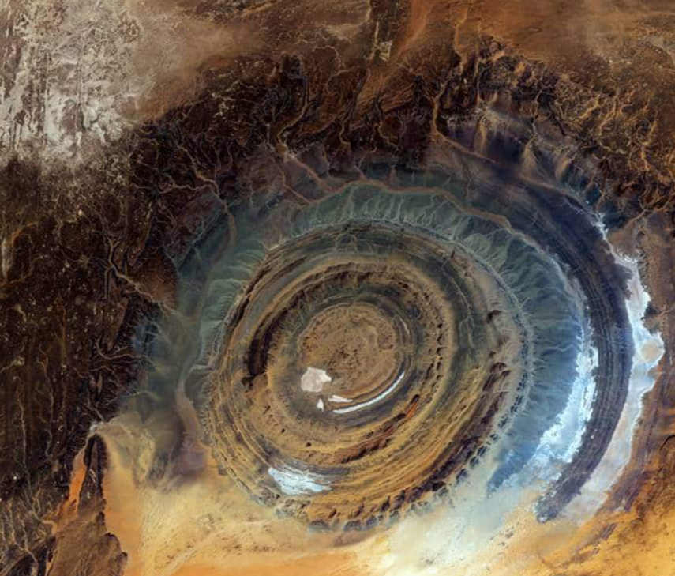
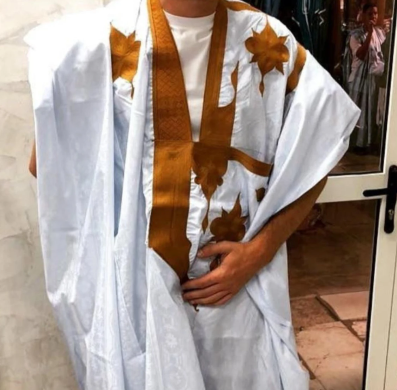
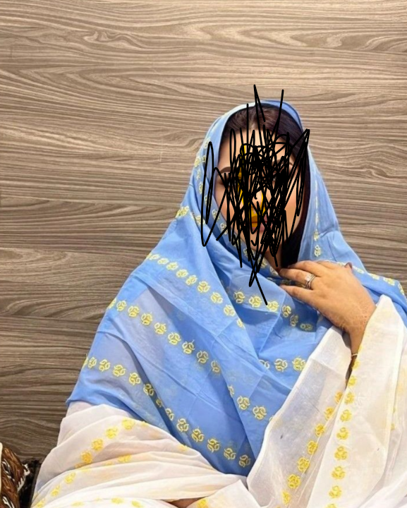
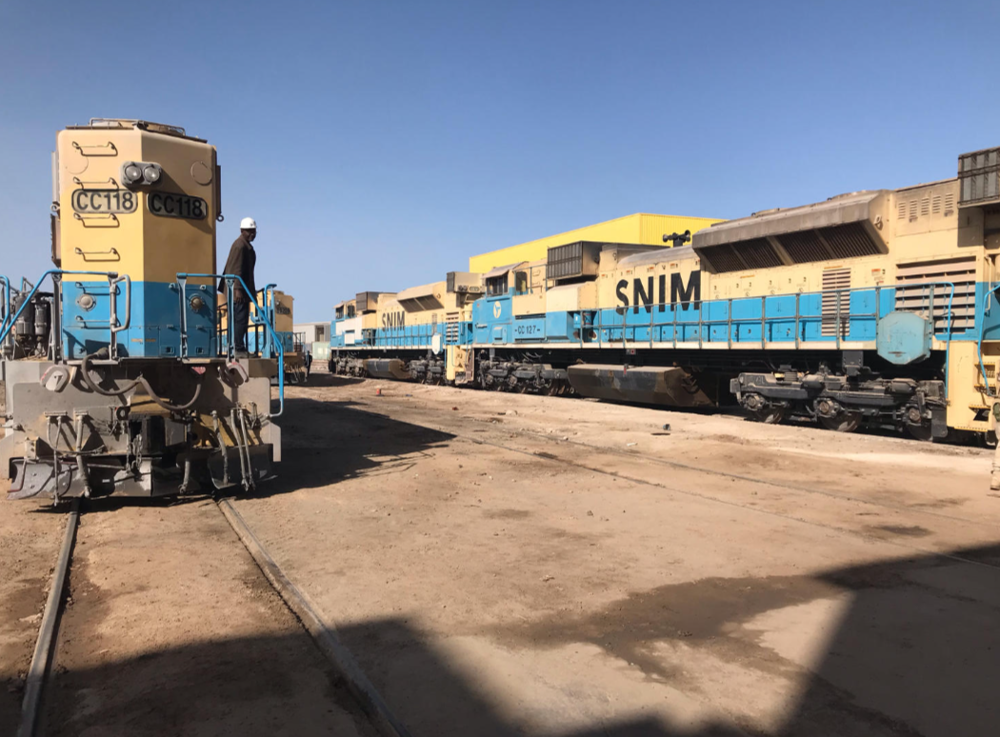
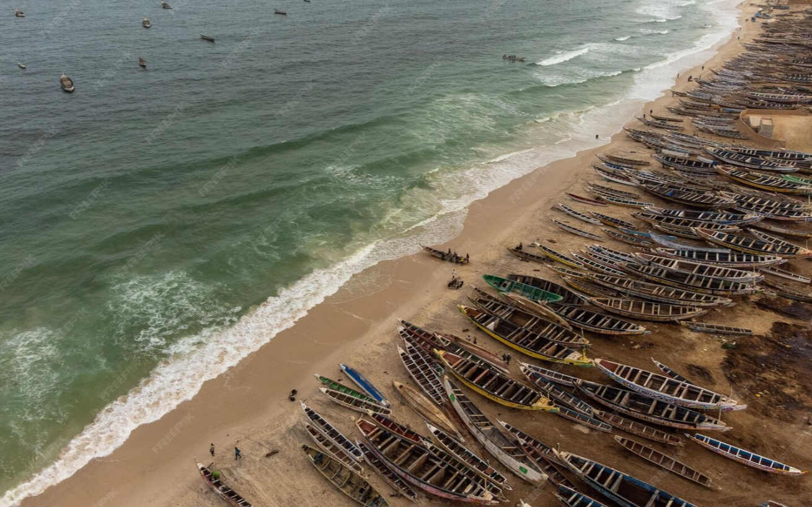
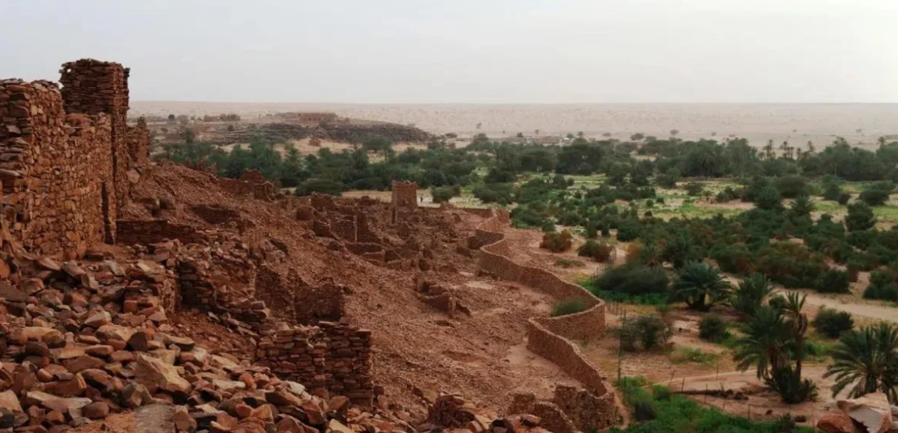

Une sélection d’images représentatives : villes, paysages, tenues et activités économiques. Chaque photo
possède une description utile pour l’accessibilité.
Chinguetti : ville ancienne et patrimoine du désert.

Guelb er Richat : symbole géologique de la Mauritanie.

La daraa : tenue masculine, élégance et identité.

La malhafa : tenue féminine, tradition et style.

La SNIM : ressource minière et logistique.

La pêche : richesse côtière et emplois.Ressources animales : élevage et pastoralisme.Nouakchott : modernité et développement.

Ouadane : une autre cité historique du désert.